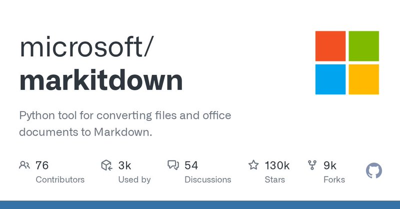

X STATUS · HIGH DENSITY CARD
生产力 Agent 屠榜：5 个项目拼出基础设施栈
GitTrend 帖与引用帖整合：MarkItDown、Supermemory、Headroom、Hermes WebUI、MoneyPrinterTurbo 被重排成 Agent 输入、记忆、上下文、控制与生产层。
Source: https://twitter.com/GitTrend0x/status/2061983876072050859
@GitTrend0x作者
18点赞
4转发
3回复

01
一句话结论
这条 GitTrend 帖真正讲的是生产力 Agent 基础设施栈成型：数据清洗、长期记忆、上下文优化、Web 控制台和内容自动化。
02
五个项目定位
1. microsoft/markitdown异构文件转 Markdown；RAG/知识库入口。
https://github.com/microsoft/markitdown
https://github.com/microsoft/markitdown
2. supermemoryai/supermemoryAgent 长期记忆引擎 + App。
https://github.com/supermemoryai/supermemory
https://github.com/supermemoryai/supermemory
3. chopratejas/headroom上下文压缩：tool outputs/logs/RAG chunks。
https://github.com/chopratejas/headroom
https://github.com/chopratejas/headroom
4. nesquena/hermes-webuiHermes Web/移动端 Dashboard。
https://github.com/nesquena/hermes-webui
https://github.com/nesquena/hermes-webui
5. harry0703/MoneyPrinterTurboAI 短视频自动生成流水线。
https://github.com/harry0703/MoneyPrinterTurbo
https://github.com/harry0703/MoneyPrinterTurbo
03
重排成 Agent 栈
输入层
MarkItDown 把 Office/PDF/网页/图片/音频变成 Markdown，是知识库前置清洗器。
记忆层
Supermemory 让 Agent 有长期召回，而不是一次性聊天。
上下文层
Headroom 压缩日志和工具输出，降低 token 成本与上下文噪声。
控制层
Hermes WebUI 把命令行 Agent 变成可移动端指挥的工作台。
04
引用帖融入
原帖引用同账号前一条“Hermes Agent 生态屠榜”帖子：其中 markitdown、hermes-webui、skills 生态、Trendshift 共同构成“Agent 基础设施 + 生态闭环”的传播叙事。
05
先试顺序
- 做知识库/RAG：MarkItDown → Headroom → Supermemory。
- 玩 Hermes：Hermes WebUI → skills 生态 → 多 Agent 工作流。
- 做内容工厂：MoneyPrinterTurbo 需额外评估版权、质量与发布合规。